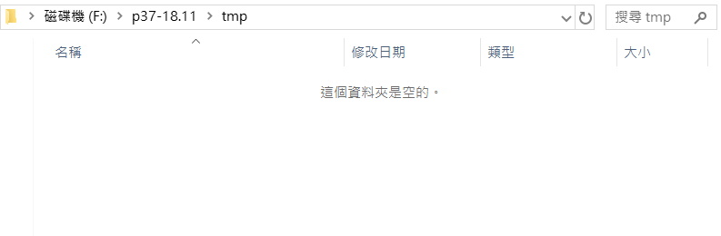
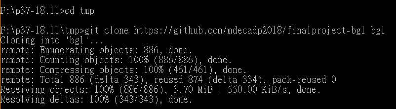

簡介
專題:機械手臂
組員:
40623201 王君庭
40623204 張晏晴
40623212 魏有泉
40623221 蔡和勳
40623227 張耀元
40623240 何冠均
---------------------------------------------------------------------------
本倉儲位於https://github.com/mdecadp2018/finalproject-bg1
倉儲clone方法:
首先須在電腦環境中安裝Ｇｉｔ然後於cmd介面中，到想放置倉儲的資料夾位置輸入git clone https://github.com/mdecadp2018/finalproject-bg1 即可，也可以在最後的地方輸入空格後再輸入想要的資料夾名稱，就會變成以該名稱命名的資料夾，沒有的話則是以finalproject-bg1命名。
示範:
電腦環境下已安裝git

開啟cmd，然後至要放置clone目錄下

輸入git clone https://github.com/mdecadp2018/finalproject-bg1 bg1，如此clone下來的目錄名稱就會以bg1表示

Next >> 操作歷程